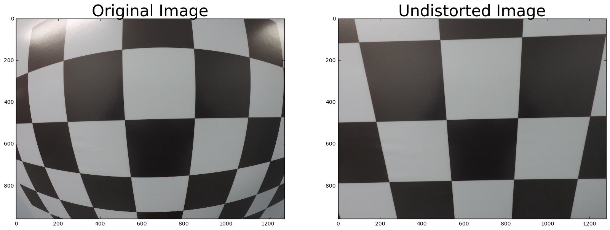

--
图像的镜头校正
从车载摄像头拍摄的照片不可不免有些失真，我们需要有一些方法来进行还原。 wiki distortion
存在两种失真，一种是径向的（tangential distortion）(左图)，一种是切向的（Radial Distortion）（右图）


前者引起的原因在于，相机的镜头没有与所拍摄的物体完全平行，导致生成的图像有倾斜失真。
后者引起的原因在于，由于光线在透过相机的镜头的边缘的时候会有所变形，导致生成的图像边缘失真。
我们可以通过一些预定义好的真实以及失真图像来确定参数，然后把这个参数应用到其他的图像上去。

x_distorted = x_ideal* (1 + k_1 * r^2 + k_2 * r^4 + k_3 * r^6)
y_distorted = y_ideal* (1 + k_1 * r^2 + k_2 * r^4 + k_3 * r^6)
x_corrected = x + [2 * p_1 * x * y + p_2 * ( r^2 + 2 * x^2)]
y_corrected = y + [p_1 * (r^2 +2 * y^2) + 2 * p_2 * x * y]
OpenCV 提供了对应的 API 来帮助我们做这个事情。
我们可以提供一个棋盘格子的图像，来告诉 OpenCV 上面有多少个格子，
没有变形的棋盘格是方方正正的，拍出来的照片总是有一些变形。

import numpy as np
import cv2
import matplotlib.pyplot as plt
import matplotlib.image as mpimg
# prepare object points
nx = 8
ny = 6
# Make a list of calibration images
fname = 'calibration_test.png'
img = cv2.imread(fname)
# Convert to grayscale
gray = cv2.cvtColor(img, cv2.COLOR_BGR2GRAY)
# Find the chessboard corners
ret, corners = cv2.findChessboardCorners(gray, (nx, ny), None)
# If found, draw corners
if ret == True:
# Draw and display the corners
cv2.drawChessboardCorners(img, (nx, ny), corners, ret)
plt.imshow(img)
nx, ny 是如何确定的？
nx 和 ny 就是 x 轴 以及 y 轴上的 grid 点的数目，比如 棋盘格上面有 18 * 8，那么 nx 就是 18 - 1， ny 就是 8 - 1
我们可以这样做来进行 undistortion
import numpy as np
import cv2
import glob
import matplotlib.pyplot as plt
from matplotlib.image import imsave as mpsave
from matplotlib.image import imread as mpread
def get_calibration_mtx():
# prepare object points, like (0,0,0), (1,0,0), (2,0,0) ....,(6,5,0)
objp = np.zeros((6*9,3), np.float32)
objp[:,:2] = np.mgrid[0:9,0:6].T.reshape(-1,2)
# Arrays to store object points and image points from all the images.
objpoints = [] # 3d points in real world space
imgpoints = [] # 2d points in image plane.
# Make a list of calibration images
img_name_list = glob.glob('../camera_cal/calibration*.jpg')
# Step through the list and search for chessboard corners
for img_name in img_name_list:
img = mpread(img_name)
gray = cv2.cvtColor(img,cv2.COLOR_RGB2GRAY)
# Find the chessboard corners
ret, corners = cv2.findChessboardCorners(gray, (9,6), None)
# If found, add object points, image points
if ret == True:
objpoints.append(objp)
imgpoints.append(corners)
# Draw and display the corners
img = cv2.drawChessboardCorners(img, (9,6), corners, ret)
cv2.imshow('img',img) # 'img' is the show window name
cv2.waitKey(500)
cv2.destroyAllWindows()
ret, mtx, dist, rvecs, tvecs = cv2.calibrateCamera(objpoints, imgpoints, gray.shape[::-1], None, None)
return mtx, dist
注意到这里我们给 objpoints append 的是同一个 objp，毕竟在 calibrateCamera() 的调用中它会保持不变的。
返回的 mtx 以及 dist 可以用来做进一步的 undistortion
下面就来做 undistortion
import numpy as np
def img_calibration(mtx, dist):
img_name = '../camera_cal/calibration.jpg'
img_org = mpread(img_name)
img_dst = cv2.undistort(img_org, mtx, dist, None, mtx)
所以一个正常的流程就是：
1. 准备好一些棋盘格的图片，用同一个相机拍摄
2. 转换成灰度图
3. 利用函数 cv2.findChessboardCorners() 找到 corners
4. 构造对应的 grid points
5. 利用函数 cv2.calibrateCamera() 计算 distortion 相关的参数
6. 利用得到的参数作用在新的图片上（来自于同一个相机），得到 undistortion 的图片
在经过这一系列处理之后，我们能够成功的把图片进行还原，比如这样：
